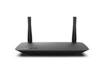
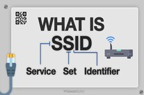
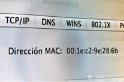

|  | Router o Punto de Acceso (Access Point) Cemite la señal inalámbrica. Mas Informacion |
| Dispositivos con adaptador Wi-Fi: laptops, smartphones, etc. | |
|  | SSID: nombre visible de la red inalámbrica. Ver más sobre SSID |
|  | Dirección MAC: identificador único de cada dispositivo |
| Protocolos de seguridad: RWEP (obsoleto), WPA2, WPA3 (actual estándar de seguridad) |